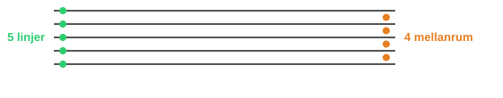
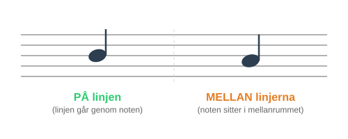
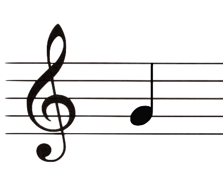
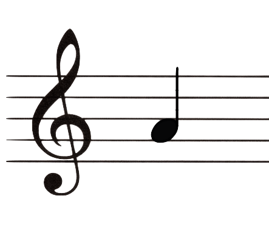
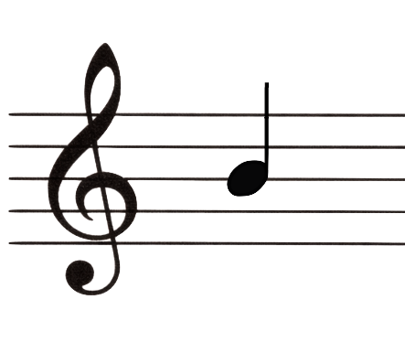
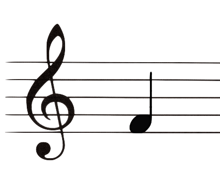
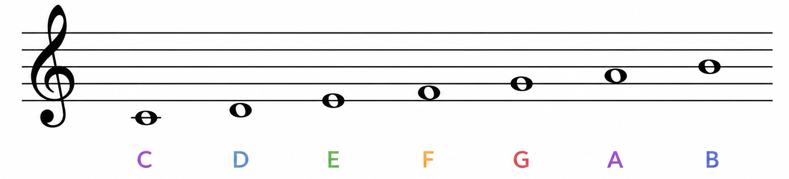
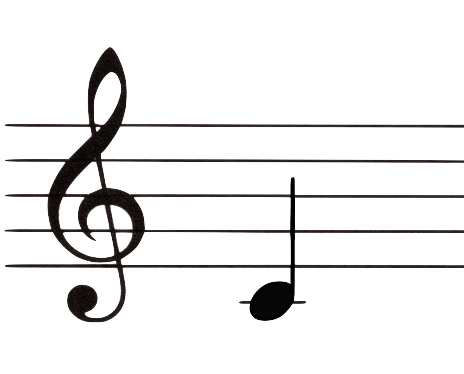

I den förra delen lärde vi oss namnen på alla stamtoner: C D E F G A B.
Vi ska titta på notsystemet - det man skriver noter på.
Varför behöver vi noter?
Tänk dig att du har hittat på en fin melodi. Du vill komma ihåg den, och du vill att en kompis ska kunna spela den också. Hur gör du då?
Man kan skriva ner musik på ett speciellt sätt som kallas notskrift. Det är som ett språk - när man kan läsa det kan man spela musik som någon annan har skrivit, även om man aldrig har hört den förut!
Men för att kunna skriva ner toner behöver vi någonting att skriva på. Precis som vi skriver text på rader i en skrivbok, skriver vi noter i ett notsystem.
Notsystemet
Ett notsystem består av fem linjer och fyra mellanrum (utrymmena mellan linjerna).

Det här är grunden för all notskrift. På de här linjerna och mellanrummen placerar vi sedan noter.
En not placeras antingen på en av linjerna, eller mellan två linjer (i ett mellanrum).

Ju högre upp i notsystemet en not placeras, desto ljusare (högre) låter tonen. Ju längre ner, desto mörkare (lägre) låter den.
Hur vet vi vad noterna heter?
För att veta vad noterna heter behöver vi ett tecken i början av notsystemet. Det tecknet kallas en klav.

Klaven vi använder här heter G-klav. Den visar var tonen G ligger i notsystemet.
G-klaven ringlar sig runt den andra linjen nerifrån. Därför vet vi att en not på den linjen heter G.
När vi vet var G ligger kan vi hitta de andra noterna genom att gå steg för steg i tonernas ordning.
Kommer du ihåg tonernas ordning från förra delen? C D E F G A B. Efter B börjar det om på C igen.
G
på linje 2 nerifrån

A
i mellanrummet ovanför

B
på nästa linje
När vi går ett steg upp från G kommer A. Då hamnar noten i mellanrummet ovanför.
Går vi ett steg till kommer B, som hamnar på nästa linje.
Fråga: Om G ligger på andra linjen nerifrån, vilken ton ligger ett steg upp, i mellanrummet ovanför G?
Visa svar
Svar: A. A kommer precis efter G i tonernas ordning. Därför ligger A i mellanrummet ovanför G.

Fråga: Om G ligger på andra linjen nerifrån, vilken ton ligger ett steg ner, i mellanrummet under G?
Visa svar
Svar: F. F kommer precis före G i tonernas ordning. Därför ligger F i mellanrummet under G.
Noternas plats i notsystemet
Nu vet vi hur vi kan hitta noterna genom att gå steg för steg. Här ser du alla tonerna från C till B tillsammans:

Ser du mönstret? När vi går steg för steg genom tonerna flyttar sig noterna också steg för steg i notsystemet. De hamnar växelvis på en linje eller mellan två linjer, och mönstret fortsätter även utanför de fem linjerna.

Lägg märke till att C ligger precis under notsystemet, på en liten extra linje. Den kallas en hjälplinje. Vi lär oss mer om hjälplinjer i nästa del.
Bra att veta: Tonerna vi har tittat på tillhör den ettstrukna oktaven. Vad oktaver är lär vi oss mer om i Del 4.
Bra jobbat!
Nu kan du grunderna i notsystemet! Du vet att det har fem linjer och fyra mellanrum och att noter kan placeras både på linjer och mellan dem.
Du har också sett hur G-klaven visar var tonen G ligger, och hur noterna placeras steg för steg på linjer och i mellanrum.
Du behöver inte kunna alla noternas platser utantill ännu - det kommer med övning!
Redo att öva?